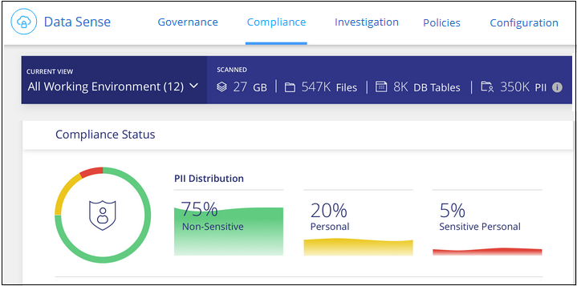

请求文档变更
请求文档变更 在 GitHub 上编辑
在 GitHub 上编辑 提供者指南
提供者指南查看有关存储在组织中的数据的合规性详细信息
通过查看有关组织中个人数据和敏感个人数据的详细信息来控制您的私有数据。您还可以通过查看数据中的 Cloud Data 感知的类别和文件类型来获得可见性。

|
只有在选择对数据源执行完整分类扫描后，才可以使用本节所述的功能。已执行仅映射扫描的数据源不会显示文件级详细信息。 |
默认情况下， Cloud Data sense 信息板会显示所有工作环境和数据库的合规性数据。

如果只想查看某些工作环境的数据， 选择这些工作环境。
您还可以从 " 数据调查 " 页面筛选结果，并以 CSV 文件的形式下载结果报告。请参见 筛选 " 数据调查 " 页面中的数据 了解详细信息。
查看包含个人数据的文件
Cloud Data sense 可自动识别数据中的特定字词，字符串和模式（ Reex ）。例如，个人身份识别信息（ PiII ），信用卡号，社会保险号，银行帐号，密码， 等等。 "请参见完整列表"。
此外，如果您添加了要扫描的数据库服务器，则 _Data Fusion 功能允许您扫描文件，以确定这些文件或其他数据库中是否存在数据库中的唯一标识符。请参见 "使用 Data Fusion 添加个人数据标识符" 了解详细信息。
对于某些类型的个人数据， Data sense 使用 proximity validation_来 验证其结果。通过查找与所发现的个人数据相邻的一个或多个预定义关键字来进行验证。例如， Data sense 可识别美国如果在 SSN 旁边看到一个接近词，则将社会安全号（ SSN ）作为 SSN ，例如 _SSN 或 _社交 安全 _ 。 "个人数据表" 显示 Data sense 何时使用接近验证。
-
从Cloud Manager左侧导航菜单中、单击*数据感知*、然后单击*合规性*选项卡。
-
要调查所有个人数据的详细信息，请单击个人数据百分比旁边的图标。

-
要调查特定类型的个人数据的详细信息，请单击 * 全部查看 * ，然后单击特定类型的个人数据的 * 调查结果 * 图标；例如，电子邮件地址。

-
通过搜索，排序，展开特定文件的详细信息，单击 * 调查结果 * 以查看屏蔽信息或下载文件列表来调查数据。

查看包含敏感个人数据的文件
Cloud Data sense 可自动识别隐私法规所定义的特殊类型的敏感个人信息 "《一般数据保护条例》第 9 条和第 10 条"。例如，有关个人健康，种族或性取向的信息。 "请参见完整列表"。
Cloud Data sense 利用人工智能（ AI ），自然语言处理（ NLP ），机器学习（ ML ）和认知计算（ CC ）来了解其扫描内容的含义，以便提取实体并相应地进行分类。
例如，一个敏感的 GDPR 数据类别是种族起源。由于其 NLP 能力， Data sense 可以区分 "George is Mexican " 一词（表示《一般数据保护条例》第 9 条规定的敏感数据）与 "George is eating Mexican f尽 " 这两者之间的区别。
|
|
扫描敏感个人数据时，仅支持英语。稍后将添加对更多语言的支持。 |
-
从Cloud Manager左侧导航菜单中、单击*数据感知*、然后单击*合规性*选项卡。
-
要调查所有敏感个人数据的详细信息，请单击敏感个人数据百分比旁边的图标。

-
要调查特定类型的敏感个人数据的详细信息，请单击 * 查看全部 * ，然后单击特定类型的敏感个人数据的 * 调查结果 * 图标。

-
通过搜索，排序，展开特定文件的详细信息，单击 * 调查结果 * 以查看屏蔽信息或下载文件列表来调查数据。
按类别查看文件
Cloud Data sense 会将扫描的数据划分为不同类型的类别。类别是基于 AI 对每个文件的内容和元数据的分析而得出的主题。 "查看类别列表"。
类别可以通过向您显示所拥有的信息类型来帮助您了解数据的变化。例如，恢复或员工合同等类别可以包含敏感数据。调查结果时，您可能会发现员工合同存储在不安全的位置。然后，您可以更正此问题描述。
|
|
类别支持英语，德语和西班牙语。稍后将添加对更多语言的支持。 |
-
从Cloud Manager左侧导航菜单中、单击*数据感知*、然后单击*合规性*选项卡。
-
直接从主屏幕中单击前 4 个类别之一的 * 调查结果 * 图标，或者单击 * 查看全部 * ，然后单击任意类别的图标。

-
通过搜索，排序，展开特定文件的详细信息，单击 * 调查结果 * 以查看屏蔽信息或下载文件列表来调查数据。
按文件类型查看文件
Cloud Data sense 会提取所扫描的数据，并按文件类型对其进行细分。查看文件类型有助于控制敏感数据，因为您可能会发现某些文件类型存储不正确。 "请参见文件类型列表"。
例如，您可能存储的 CAD 文件包含有关您的组织的非常敏感的信息。如果这些文件不安全，您可以通过限制权限或将文件移动到其他位置来控制敏感数据。
-
从Cloud Manager左侧导航菜单中、单击*数据感知*、然后单击*合规性*选项卡。
-
直接从主屏幕中单击前 4 种文件类型之一的 * 调查结果 * 图标，或者单击 * 查看全部 * ，然后单击任意文件类型的图标。

-
通过搜索，排序，展开特定文件的详细信息，单击 * 调查结果 * 以查看屏蔽信息或下载文件列表来调查数据。
查看文件元数据
在数据调查结果窗格中，您可以单击  用于查看文件元数据的任何单个文件。
用于查看文件元数据的任何单个文件。

除了向您显示文件所在的工作环境和卷之外，元数据还会显示更多信息，包括文件权限，文件所有者，此文件是否存在重复项以及分配的 AIP 标签（如果有） "在云数据感知中集成 AIP"）。如果您计划使用此信息，此信息将非常有用 "创建策略" 因为您可以看到可用于筛选数据的所有信息。
请注意，并非所有信息都可用于所有数据源—只是适合该数据源的信息。例如，卷名称，权限和 AIP 标签与数据库文件无关。
查看单个文件的详细信息时，可以对该文件执行以下操作：
-
您可以将此文件移动或复制到任何 NFS 共享。请参见 "将源文件移动到 NFS 共享" 和 "将源文件复制到 NFS 共享" 了解详细信息。
-
您可以删除此文件。请参见 "正在删除源文件" 了解详细信息。
-
您可以为文件分配特定状态。请参见 "正在应用标记" 了解详细信息。
-
您可以将此文件分配给 Cloud Manager 用户，以负责对该文件执行任何后续操作。请参见 "为文件分配用户" 了解详细信息。
-
如果您已将 AIP 标签与 Cloud Data sense 集成在一起，则可以为此文件分配一个标签，或者如果已存在另一个标签，则可以更改为其他标签。请参见 "手动分配 AIP 标签" 了解详细信息。
查看文件和目录的权限
要查看有权访问文件或目录的所有用户或组的列表及其权限类型、请单击*查看所有权限*。此按钮仅适用于CIFS共享、SharePoint和OneDrive中的数据。
请注意，如果您看到的是 SID （安全标识符），而不是用户和组名称，则应将 Active Directory 集成到 Data sense 中。 "了解如何执行此操作"。

您可以单击  查看属于该组的用户列表。
查看属于该组的用户列表。
此外、 您可以单击某个用户或组的名称、此时将显示调查页面、并在"用户/组权限"筛选器中填充该用户或组的名称、以便您可以查看该用户或组有权访问的所有文件和目录。
检查存储系统中是否存在重复文件
您可以查看存储系统中是否存储了重复的文件。如果您要确定可节省存储空间的区域，此功能非常有用。此外，确保具有特定权限或敏感信息的某些文件不会在存储系统中进行不必要的复制也会很有帮助。
Data sense 使用哈希技术来确定重复文件。如果任何文件与另一个文件具有相同的哈希代码，我们可以 100% 确保这些文件完全重复，即使文件名不同也是如此。
您可以下载重复文件列表并将其发送给存储管理员，以便他们确定可以删除哪些文件（如果有）。您也可以 "删除文件" 如果您确信不需要特定版本的文件，请自行选择。
查看所有重复的文件
如果您需要列出在工作环境中复制的所有文件以及正在扫描的数据源，则可以在 " 数据调查 " 页面中使用名为 * 重复项 > 具有重复项 * 的筛选器。
结果页面将显示所有文件类型（不包括数据库）中的重复文件，最小大小为 50 MB 且 / 或包含个人或敏感个人信息。
查看特定文件是否重复
如果要查看单个文件是否存在重复项，可以在数据调查结果窗格中单击  用于查看文件元数据的任何单个文件。如果某个文件存在重复项，则此信息将显示在 Duplicates 字段旁边。
用于查看文件元数据的任何单个文件。如果某个文件存在重复项，则此信息将显示在 Duplicates 字段旁边。
要查看重复文件的列表及其所在位置，请单击 * 查看详细信息 * 。在下一页中，单击 * 查看重复项 * 以查看调查页面中的文件。


|
您可以随时使用此页面中提供的 " 文件哈希 " 值并直接在 " 调查 " 页面中输入此值以搜索特定的重复文件，也可以在策略中使用此值。 |
查看特定工作环境的信息板数据
您可以筛选 Cloud Data sense 信息板的内容，以查看所有工作环境和数据库的合规性数据，或者仅查看特定工作环境的合规性数据。
筛选信息板时， Data sense 会将合规性数据和报告范围仅限于您选择的工作环境。
-
单击筛选器下拉列表，选择要查看其数据的工作环境，然后单击 * 查看 * 。

筛选 " 数据调查 " 页面中的数据
您可以筛选调查页面的内容，以便仅显示要查看的结果。这是一项功能非常强大的功能、因为在对数据进行细化后、您可以使用页面顶部的按钮栏执行各种操作、包括复制文件、移动文件、向文件添加标记或AIP标签等。
如果要在优化页面内容后将其作为报告下载、请单击  按钮。您可以将报告本地保存为.CSV文件(最多可包含5、000行数据)或导出到NFS共享的.json文件(最多可包含不限数量的行)。 "有关数据调查报告的详细信息、请访问此处"。
按钮。您可以将报告本地保存为.CSV文件(最多可包含5、000行数据)或导出到NFS共享的.json文件(最多可包含不限数量的行)。 "有关数据调查报告的详细信息、请访问此处"。

-
通过顶层选项卡、您可以查看文件(非结构化数据)、目录(文件夹和文件共享)或数据库(结构化数据)中的数据。
-
通过每列顶部的控件，您可以按数字或字母顺序对结果进行排序。
-
您可以通过左窗格筛选器从以下属性中进行选择来细化结果：
筛选器 详细信息 策略
选择一个或多个策略。开始 "此处" 可查看现有策略列表并创建您自己的自定义策略。
打开权限
选择数据以及文件夹/共享中的权限类型
用户 / 组权限
选择一个或多个用户名和/或组名称、或者输入部分名称
文件所有者
输入文件所有者名称
Label
选择 … "AIP 标签" 分配给文件的
工作环境类型
选择工作环境的类型。OneDrive、SharePoint和Google Drive归类为"云应用程序"。
工作环境名称
选择特定的工作环境
存储库
选择存储库，例如卷或模式
文件路径
输入部分路径或完整路径
类别
选择 "类别类型"
敏感度级别
选择敏感度级别
标识符数量
选择每个文件检测到的敏感标识符范围。包括个人数据和敏感个人数据。
个人数据
选择 "个人数据的类型"
敏感个人数据
选择 "敏感个人数据的类型"
数据主题
输入数据主体的全名或已知标识符
目录类型
选择目录类型："共享"或"文件夹"
文件类型
选择 "文件类型"
文件大小
选择文件大小范围
创建时间
创建文件时选择一个范围
发现时间
选择 Data sense 发现文件时的范围
上次修改时间
选择上次修改文件的时间范围
上次访问
选择上次访问文件的时间范围。对于 Data sense 扫描的文件类型，这是 Data sense 上次扫描该文件的时间。
重复
选择是否在存储库中复制文件
文件哈希
输入文件的哈希以查找特定文件，即使名称不同也是如此
Tags
选择 … "一个或多个标记" 分配给文件的
已分配给
选择将文件分配到的人员的姓名
请注意、"目录"级别当前不支持按钮栏和策略中提供的操作。